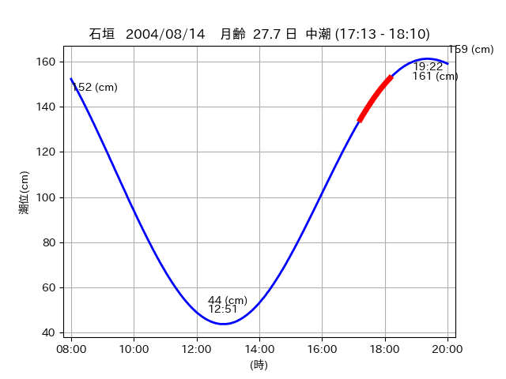

<!DOCTYPE html>
<html>
<head>
    
    <meta http-equiv="content-type" content="text/html; charset=UTF-8" />
    
        <script>
            L_NO_TOUCH = false;
            L_DISABLE_3D = false;
        </script>
    
    <style>html, body {width: 100%;height: 100%;margin: 0;padding: 0;}</style>
    <style>#map {position:absolute;top:0;bottom:0;right:0;left:0;}</style>
    <script src="https://cdn.jsdelivr.net/npm/leaflet@1.9.3/dist/leaflet.js"></script>
    <script src="https://code.jquery.com/jquery-3.7.1.min.js"></script>
    <script src="https://cdn.jsdelivr.net/npm/bootstrap@5.2.2/dist/js/bootstrap.bundle.min.js"></script>
    <script src="https://cdnjs.cloudflare.com/ajax/libs/Leaflet.awesome-markers/2.0.2/leaflet.awesome-markers.js"></script>
    <link rel="stylesheet" href="https://cdn.jsdelivr.net/npm/leaflet@1.9.3/dist/leaflet.css"/>
    <link rel="stylesheet" href="https://cdn.jsdelivr.net/npm/bootstrap@5.2.2/dist/css/bootstrap.min.css"/>
    <link rel="stylesheet" href="https://netdna.bootstrapcdn.com/bootstrap/3.0.0/css/bootstrap-glyphicons.css"/>
    <link rel="stylesheet" href="https://cdn.jsdelivr.net/npm/@fortawesome/fontawesome-free@6.2.0/css/all.min.css"/>
    <link rel="stylesheet" href="https://cdnjs.cloudflare.com/ajax/libs/Leaflet.awesome-markers/2.0.2/leaflet.awesome-markers.css"/>
    <link rel="stylesheet" href="https://cdn.jsdelivr.net/gh/python-visualization/folium/folium/templates/leaflet.awesome.rotate.min.css"/>
    
            <meta name="viewport" content="width=device-width,
                initial-scale=1.0, maximum-scale=1.0, user-scalable=no" />
            <style>
                #map_87432e9c696afd5aaa14083a940b64b9 {
                    position: relative;
                    width: 2048.0px;
                    height: 1600.0px;
                    left: 0.0%;
                    top: 0.0%;
                }
                .leaflet-container { font-size: 1rem; }
            </style>
        
</head>
<body>
    
    
            <div class="folium-map" id="map_87432e9c696afd5aaa14083a940b64b9" ></div>
        
</body>
<script>
    
    
            var map_87432e9c696afd5aaa14083a940b64b9 = L.map(
                "map_87432e9c696afd5aaa14083a940b64b9",
                {
                    center: [24.25, 124.125],
                    crs: L.CRS.EPSG3857,
                    ...{
  "zoom": 12,
  "zoomControl": true,
  "preferCanvas": false,
}

                }
            );

            

        
    
            var tile_layer_2b6cf65d2d159580cc5dcc0dc78071ad = L.tileLayer(
                "https://cyberjapandata.gsi.go.jp/xyz/seamlessphoto/{z}/{x}/{y}.jpg",
                {
  "minZoom": 0,
  "maxZoom": 18,
  "maxNativeZoom": 18,
  "noWrap": false,
  "attribution": "\u5730\u7406\u9662\u5730\u56f3",
  "subdomains": "abc",
  "detectRetina": false,
  "tms": false,
  "opacity": 1,
}

            );
        
    
            tile_layer_2b6cf65d2d159580cc5dcc0dc78071ad.addTo(map_87432e9c696afd5aaa14083a940b64b9);
        
    
            var marker_90b6c6ab134752fa947d46ec8d2ef2b9 = L.marker(
                [24.3229, 124.1818],
                {
}
            ).addTo(map_87432e9c696afd5aaa14083a940b64b9);
        
    
            var icon_dda1bfca0761af43da5eed3a3e1083fb = L.AwesomeMarkers.icon(
                {
  "markerColor": "blue",
  "iconColor": "white",
  "icon": "info-sign",
  "prefix": "glyphicon",
  "extraClasses": "fa-rotate-0",
}
            );
        
    
        var popup_f46e75169bbdfe790efabe4dc20ee3e2 = L.popup({
  "maxWidth": "100%",
});

        
            
                var html_87d26bbf720b8097634fb4cb146175e1 = $(`<div id="html_87d26bbf720b8097634fb4cb146175e1" style="width: 100.0%; height: 100.0%;"><table><tr><td></td></tr><tr><td><center>20040814 No.1 </center></table></td></tr></table</div>`)[0];
                popup_f46e75169bbdfe790efabe4dc20ee3e2.setContent(html_87d26bbf720b8097634fb4cb146175e1);
            
        

        marker_90b6c6ab134752fa947d46ec8d2ef2b9.bindPopup(popup_f46e75169bbdfe790efabe4dc20ee3e2)
        ;

        
    
    
                marker_90b6c6ab134752fa947d46ec8d2ef2b9.setIcon(icon_dda1bfca0761af43da5eed3a3e1083fb);
            
    
            var marker_0563b318a9e7250762f78debacc1d007 = L.marker(
                [24.2505, 124.1251],
                {
}
            ).addTo(map_87432e9c696afd5aaa14083a940b64b9);
        
    
            var icon_6924d1398e3b1a697b74874490ed6784 = L.AwesomeMarkers.icon(
                {
  "markerColor": "blue",
  "iconColor": "white",
  "icon": "info-sign",
  "prefix": "glyphicon",
  "extraClasses": "fa-rotate-0",
}
            );
        
    
        var popup_2afcf2f27ca1f729fe22213fdbce0a2a = L.popup({
  "maxWidth": "100%",
});

        
            
                var html_4d67b6ff4e9701e27cc6f6c9b88de6f9 = $(`<div id="html_4d67b6ff4e9701e27cc6f6c9b88de6f9" style="width: 100.0%; height: 100.0%;"><table><tr><td></td></tr><tr><td><center>20040814 No.2 </center></table></td></tr></table</div>`)[0];
                popup_2afcf2f27ca1f729fe22213fdbce0a2a.setContent(html_4d67b6ff4e9701e27cc6f6c9b88de6f9);
            
        

        marker_0563b318a9e7250762f78debacc1d007.bindPopup(popup_2afcf2f27ca1f729fe22213fdbce0a2a)
        ;

        
    
    
                marker_0563b318a9e7250762f78debacc1d007.setIcon(icon_6924d1398e3b1a697b74874490ed6784);
            
</script>
</html>